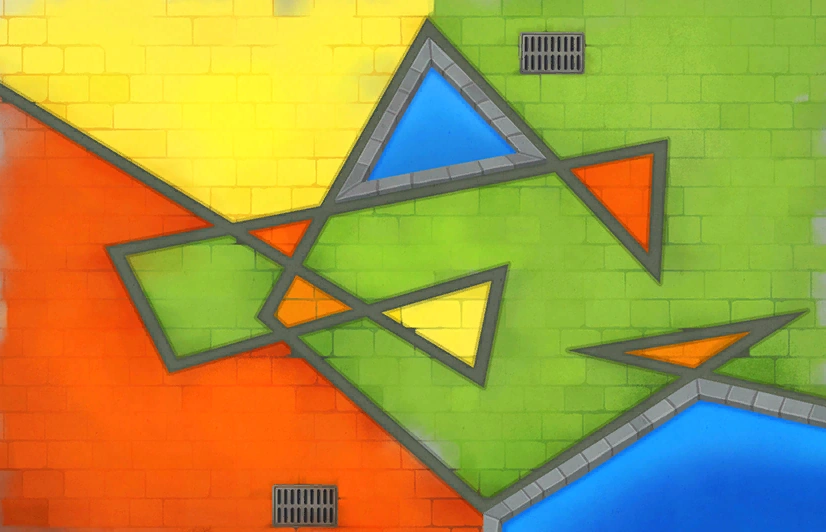
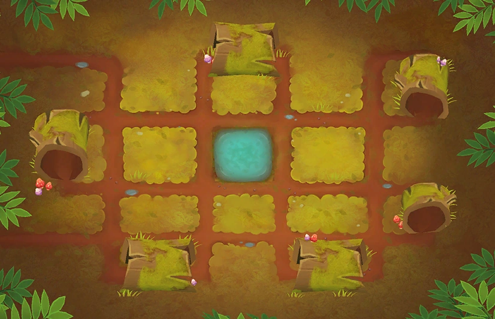
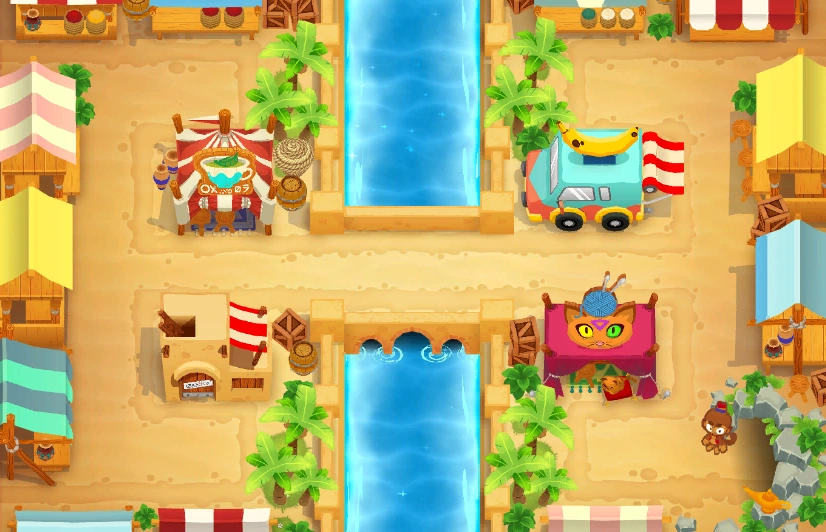
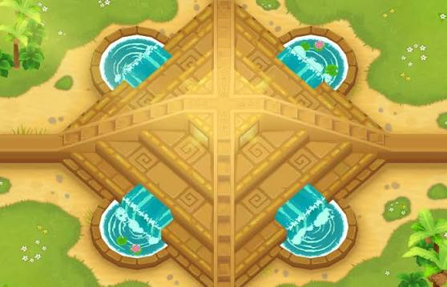
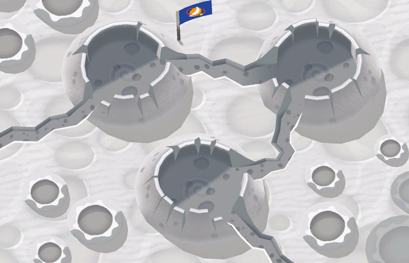
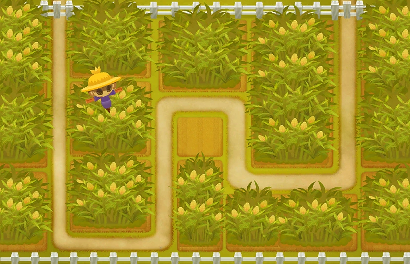

Mapas
Os mapas são uma das principais características de Bloons TD 6, pois determinam o caminho percorrido pelos balões, os locais disponíveis para posicionar as torres e o nível de dificuldade de cada partida. O jogo possui mapas divididos em quatro categorias de dificuldade: Iniciante, Intermediário, Avançado e Expert. Cada categoria apresenta desafios diferentes, desde trajetos simples e espaçosos até mapas complexos, com obstáculos, múltiplos caminhos e pouco espaço para posicionamento das torres. A seguir, vejamos os principais mapas de cada categoria:
Mapas iniciantes

Campo dos símios
Um mapa com caminho único, longo e sem obstáculos que bloqueiem a visão das torres. É um dos melhores para aprender os fundamentos do jogo.

Cubismo
Possui um trajeto com várias curvas e bastante espaço para posicionar torres. É conhecido por permitir diversas combinações de estratégias.

Troncos
Apresenta um caminho bastante longo, com curvas e troncos de madeira ao redor. Seu trajeto permite que as torres ataquem os balões durante bastante tempo.
Mapas intermediários

Bazar
Apresenta dois caminhos alternados, utilizados em rodadas diferentes. Exige atenção ao posicionamento das torres para que ambos os trajetos sejam protegidos.

Templo da Adora
Possui dois caminhos que funcionam simultaneamente, exigindo uma defesa capaz de atingir diferentes direções. O mapa também conta com áreas de água.

Pouso na lua
Ambientado na superfície lunar, possui um caminho único que passa por três grandes crateras. O trajeto permite que os balões permaneçam bastante tempo na área de ataque das torres.
Mapas avançados

Milharal
Ambientado em uma plantação de milho, apresenta obstáculos que bloqueiam a visão das torres. É possível remover parte do milho para liberar espaço e melhorar a defesa.